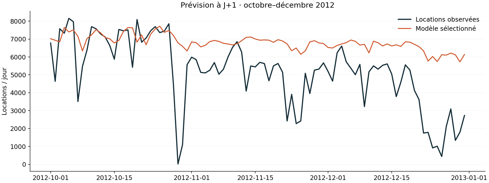

Erreur absolue moyenne · test1757locations par jour
Évolution de MAE vs référence-20.5 %un gain positif indique une amélioration
Période de test séparée92 joursoctobre → décembre 2012
Prévu / observé

Choisis un jour du test pour examiner une prévision historique.
Choisir le modèle avant le test
Apprentissage jusqu’à juin 2012, validation de juillet à septembre. Le modèle retenu est Gradient boosting. Il est ensuite réentraîné sur l’apprentissage et la validation ; le dernier trimestre sert à l’évaluation finale.
| Validation | MAE ↓ | RMSE ↓ |
|---|
| Semaine precedente | 802 | 1115 |
| Gradient boosting | 730 | 902 |
| Random forest | 785 | 926 |
Ce que cette démo permet de conclureChaque jour est prédit avec les locations réellement connues jusqu’à la veille. Il ne s’agit pas de prévoir trois mois d’un seul coup. Les variables météo observées sont exclues, tout comme les colonnes casual et registered dont la somme est la cible.
Deux ans de données historiques ne démontrent pas une performance actuelle. Les événements exceptionnels, les évolutions du réseau et l’absence de données par station limitent l’usage opérationnel. Les performances ne prouvent aucune économie financière.
À discuter en entretien
- Pourquoi un découpage aléatoire surestimerait-il la généralisation temporelle ?
- Pourquoi comparer le modèle à la même journée de la semaine précédente ?
- Comment adapter l’évaluation à un horizon de sept jours sans connaître les valeurs intermédiaires ?
- Pourquoi les erreurs les plus importantes méritent-elles une analyse métier ?